1 of 10
Come downstairs.
The living room. The lawn. The bar in the evening. The best part of a stay is rarely in the room, and it’s hard to know a place if you only know your own four walls.
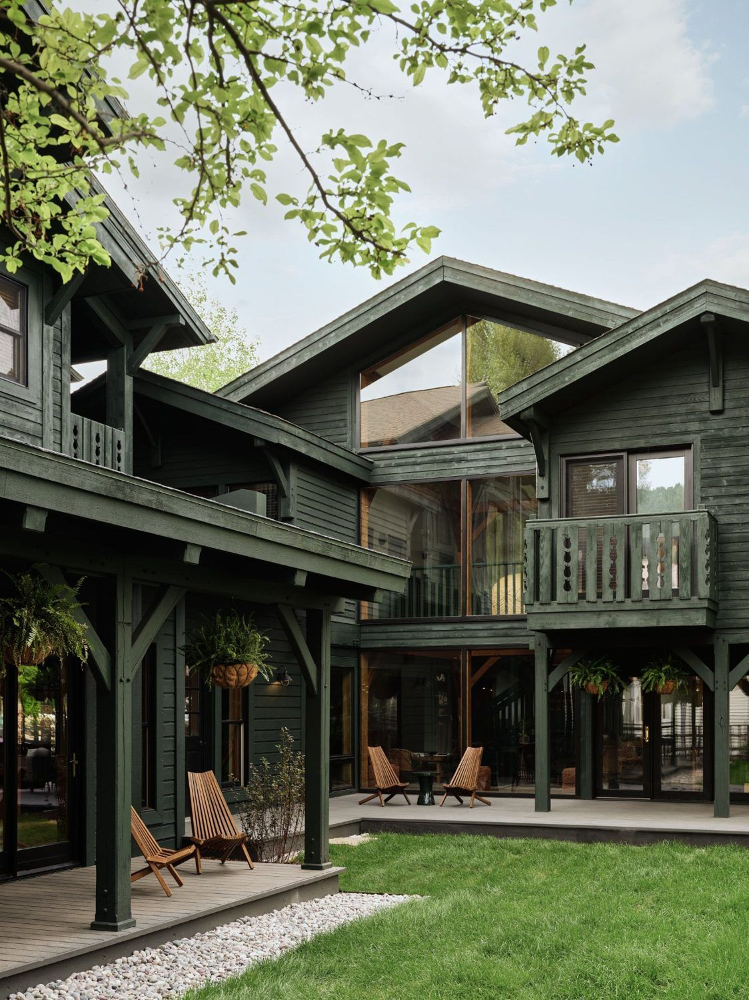
The choices behind a stay at Alpine House
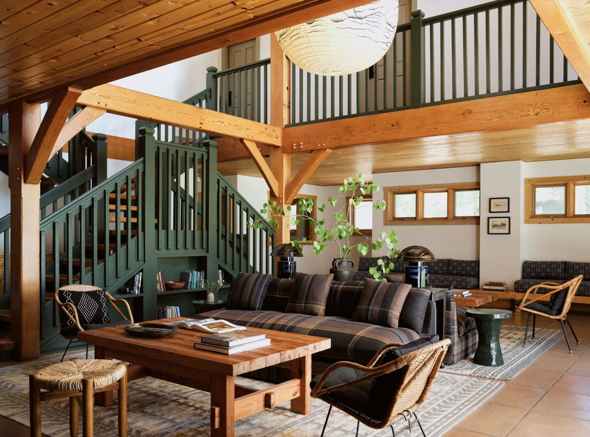
Alpine House is a house before it’s a hotel.
Guests find each other here over coffee in the living room, on the lawn in the late afternoon, at the bar in the evening. What draws people out of their rooms is usually something someone made: an artist at work, a print worth asking about, a chair with a story behind it.
We believe in paying attention to what was here before us, making room for what is here now, and leaving the house in better shape for whoever comes next. And these are the things that matter to us:
The best moments here happen because someone feels at home enough to sit down, stay awhile, and say something to a stranger.
Artists and makers come and go through this house. So do the people who work here and live in this valley year-round. We want guests to encounter Jackson as it is, not a version made only for visitors.
What already exists is often better than what could be ordered new. Keeping, repairing, and reusing is the standard we hold every day.
The mountains set the terms here: the light, the seasons, how long the winter runs. This house was built to sit inside that landscape, not above it.
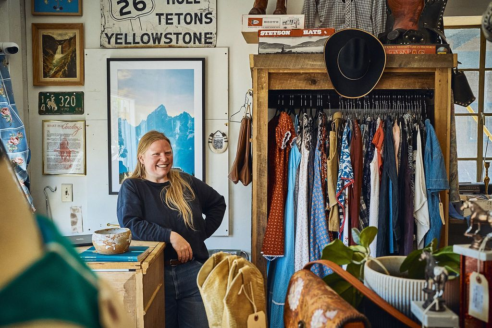
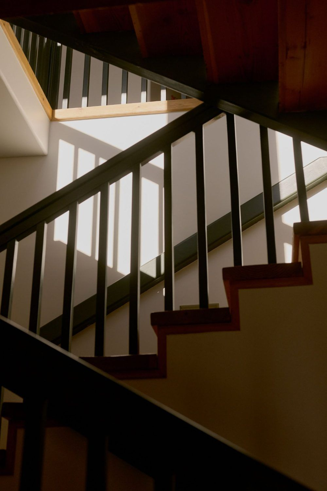
Next · 02Then & Now→Jackson residents Hans and Nancy Johnstone had spent years skiing and racing across the Alps and Scandinavia, both Olympians.
What stayed with them were the family-run mountain guest houses they knew there: small and unfussy, wood and down, no brand, and the same people at breakfast you’d seen on the trail. Jackson had nothing quite like it.
They found a classified ad for a beat-up log cabin on a commercially zoned lot in town. They moved the cabin to the back, lived in it, and in 1994 opened seven rooms and a kitchen on the front of the lot. The timber frame was built in true mortise-and-tenon construction from recycled timbers out of a Washington State warehouse.
After a friend next door decided to sell her house and barn, fifteen more rooms were added in 2001. The Johnstones won a variance to keep the two spruce trees out front, which were slated to become a parking lot. Nothing on the site was demolished. The neighbor’s house and barn were moved, and the original cabin became part of the elementary school. Their parents shopped for Scandinavian-looking vintage furniture in the Northeast and drove what they found back in a U-Haul.
For more than two decades, the Johnstones ran Alpine House as a small, independent hotel: affordable, personable, and closely connected to the town around it. Guests came back year after year, and the house developed a reputation among European travelers, skiers priced out of the village, and local outfitters. They also cared about conservation and responsible practices long before those ideas were common in hospitality, and pursued sustainability certification.
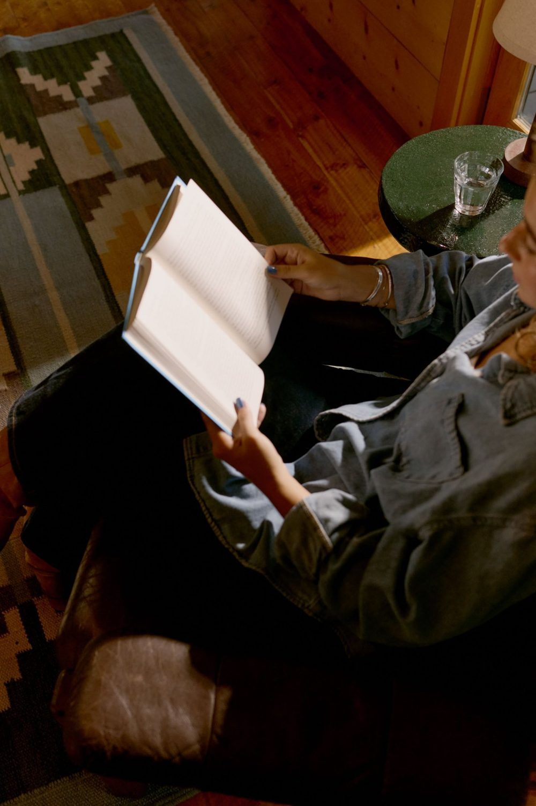
When the Johnstones decided it was time to retire, they wanted to be sure the house would be cared for by someone who understood what made it special. They looked across the street to their neighbor, hotelier Erik Warner.
Erik acquired Alpine House in 2020, bringing it into the small group of independent properties he operated on the block, alongside the Anvil across the street and Glorietta next door. The properties were different, but the approach was shared: keep them independent, stay connected to the town, and make room for the people who live and work here.
That continuity mattered. Alpine House didn’t need to become something else. It needed someone willing to carry it forward.
In 2026, the house went through a full renovation. The brief was narrow on purpose: keep the name, keep the vision, improve what was already here. The frame stayed. The gathering rooms stayed. The spruce trees stayed.
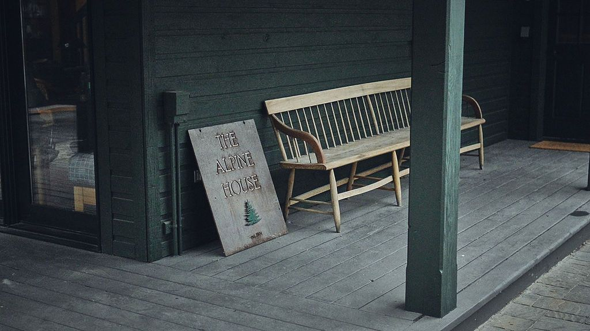
What changed was who the house is making room for. Jackson has no shortage of places built for skiers. What it has less of is room for the people making things here. The inn that once filled with athletes now has a permanent home for an artist in residence, regional work in every guestroom, and rooms set aside for the valley’s own.
The instinct hasn’t changed since 1994: find what the town needs a place for, and give it a house.
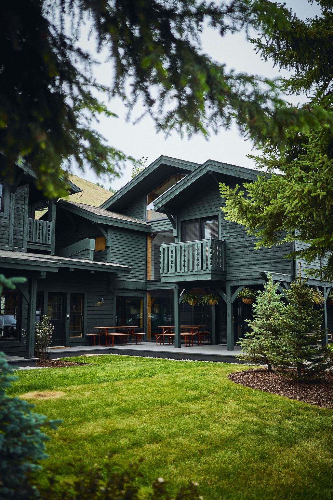
Next · 03The Building→In 2026, Alpine House went through a full renovation with a simple aim: to keep everything that made Alpine feel like a house, just enhance it.
That called for someone who would respect the building’s identity instead of overwriting it. We found her in Elizabeth Roberts.
Elizabeth was trained in historic preservation and spent most of her career restoring nineteenth-century townhouses. Alpine House was one of her first hotel projects, which is part of why we called her.
Just like the Johnstones did 25 years earlier, Elizabeth built the interiors largely from vintage pieces and reused what was already there. Every room is different. The team worked with dealers around the country, bid at live auctions, and sent found pieces to a Texas workroom for reupholstering.
The building itself was mostly left alone: the same walls, the same gathering rooms, the same kitchen. The majority of the old furniture was either reused, donated, or repurposed, which meant 5,100 lbs. of waste diverted from landfill.
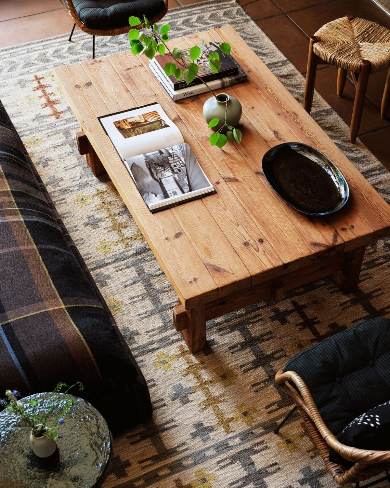
The renovation went through a MindClick assessment focused on the health and environmental characteristics of the new materials and found that:
of surface areas in public areas are made of biodegradable, recyclable or reusable materials
of furnishings in our hotel were chosen for health, wellness or responsible sourcing
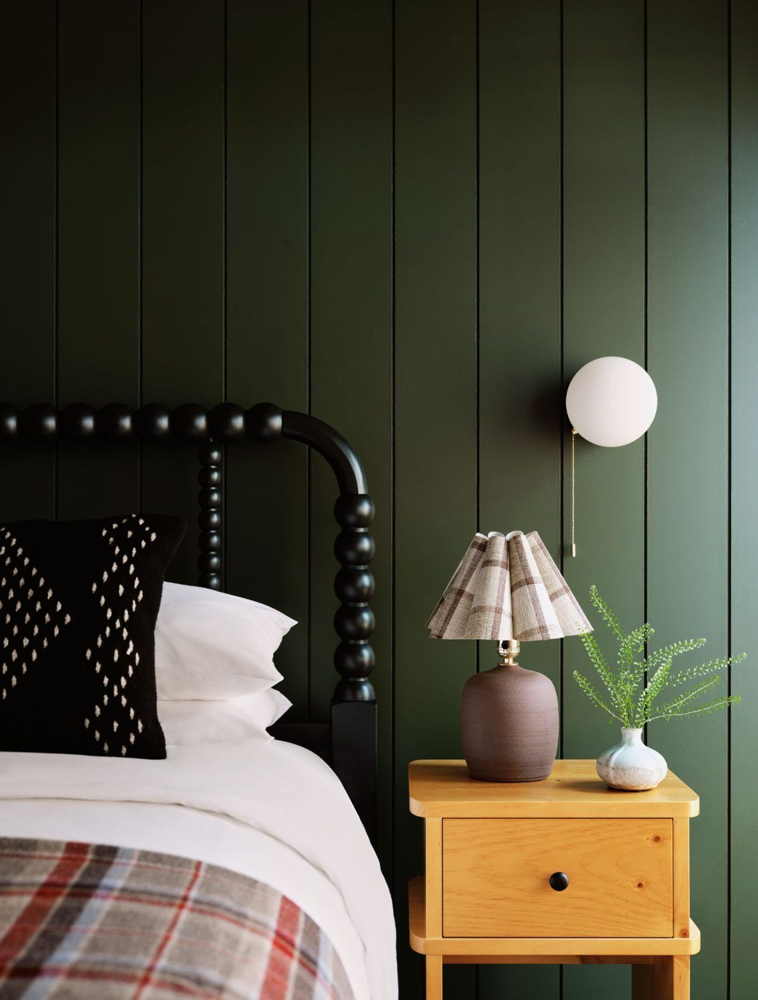
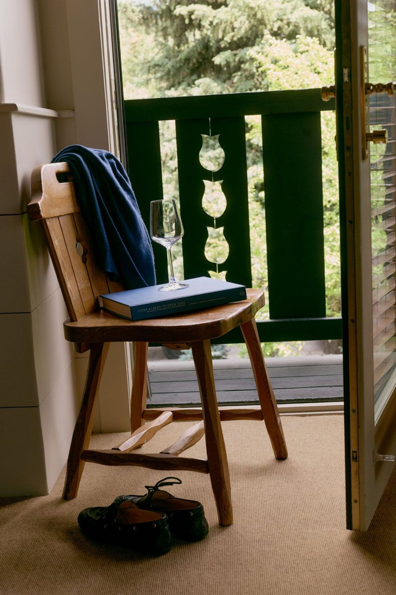
Next · 04By the Numbers→Energy used per occupied room night
Water used per occupied room
Waste generated per occupied room
CO₂e emitted per occupied room
Because electricity was almost half our emissions, in 2026 we switched to 100% renewable electricity. Counting the renewable power we buy, we expect this to cut our footprint by 47% to
kg CO₂e / room night · 45% below similar hotels
For our 2026 renovation, we reused and repurposed wherever possible. We worked with MindClick to calculate what we saved:
of CO₂e avoided in manufacturing & shipping through the use of vintage and existing furniture.Equivalent to 2,360 miles driven.
of waste diverted from landfill through circular practicesEquivalent to more than a year and a half of the trash one American sends to landfill.
The methodology on how these figures were calculated and where the data comes from is detailed in The Fine Print.
of team members live locally
compared to 57% Teton County levels
of employees are in hotel-subsidized local housing
of rooms are available for live-in staff and artists
of total staff earn at least the living wage
compared to 31% US average
of leadership roles are women
compared to 49% nationally
of suppliers are based in Jackson
of top supplier spend stays in Wyoming
in annual room value is dedicated to artists
artists to be hosted per year
non-institutional ownership
independent, values-aligned management
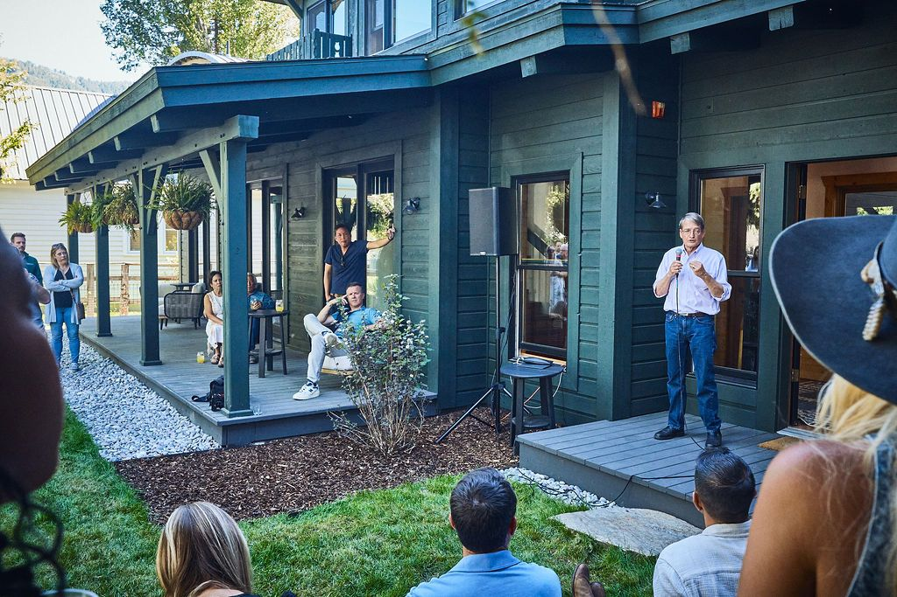
The methodology on how these figures were calculated and where the data comes from is detailed in The Fine Print.
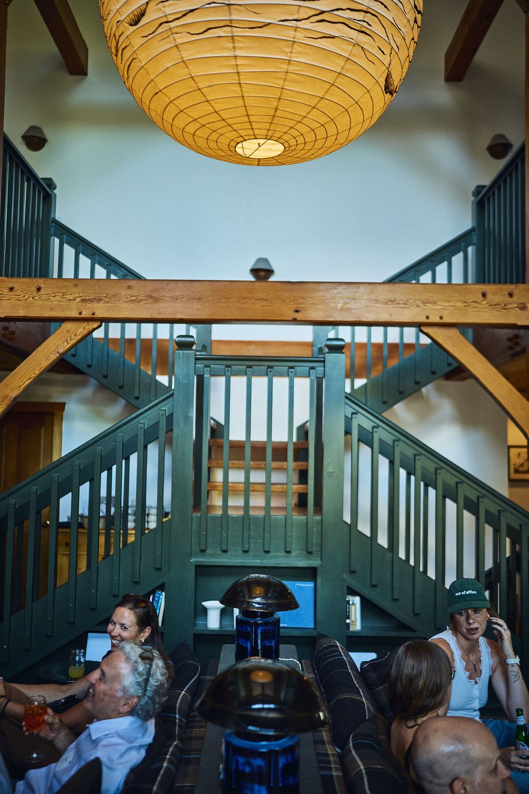
Next · 05What It Takes→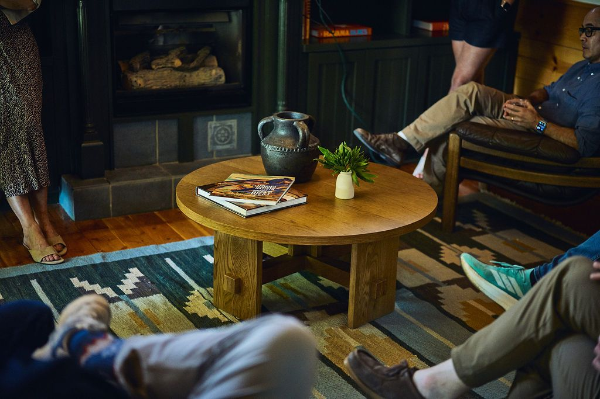
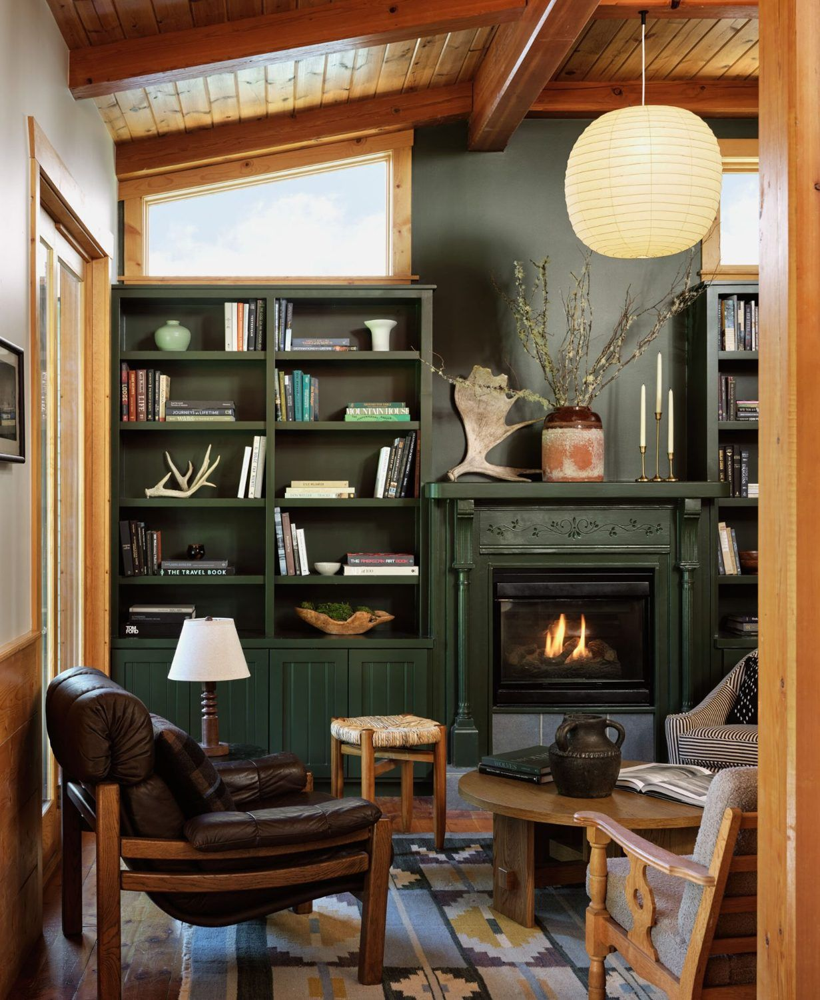
The etchings hanging in the bar and library are by Hans Kleiber, who came to Wyoming in 1906 hoping to be an artist and became a forest ranger instead. He spent sixteen years with the U.S. Forest Service in the Bighorns, laying out roads and trails still in use today, mapping unfamiliar country in the Big Horn, Washakie, Wind River, and Bridger forests, fighting fires, and stringing telephone lines between ranger stations. The sketches and notes he made in the backcountry became the source material for everything that followed.
He resigned in 1923 to make art full time. Largely self-taught, he built his own printing press from gears and rollers cast at the Sheridan Foundry. A guest at a nearby guest ranch saw the work and arranged his first major show in Boston. He won the Silver Medal from the California Print Makers Society in 1931 and was given a showing at the Smithsonian in 1944. A critic called him the Etcher Laureate of the Big Horns.
His work is now held by the Library of Congress, the Wyoming State Art Museum, and the Buffalo Bill Center in Cody, among others. A guest’s eye helped put it there in the first place.
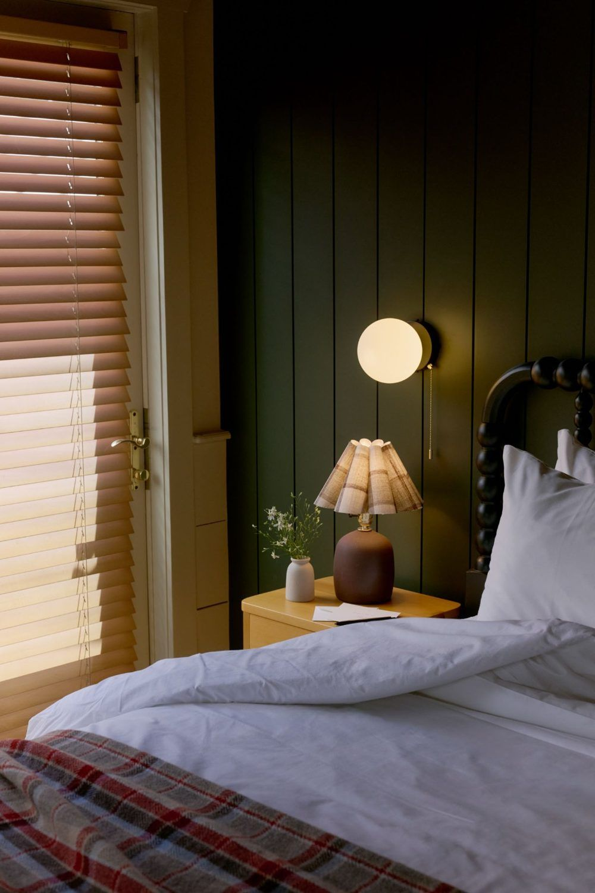
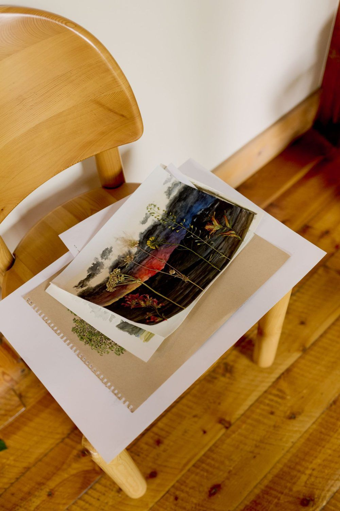
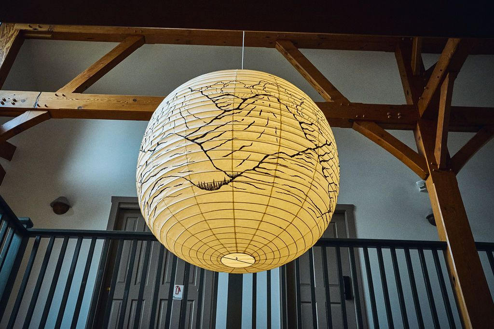
Each guestroom contains a unique print made by hand in Missoula. David Miles Lusk works under the name Anomal Press, a splice of “animal” and “anomaly,” and has been making relief prints since a high school art teacher put a carving tool in his hand twenty years ago.
Every design is drawn, carved, and printed by him. No reproduction. No catalog. No two rooms alike.
His subjects run from leaf moss to megafauna, and his work is always grounded on research. During a residency at the Montana Natural History Center, he spent a month working from the collection’s specimens: pronghorn, beaver, grizzly, wood duck, sagebrush. That’s where we found him.
If you want one of your own, he sells at markets around Missoula and at anomalpress.com.
His imagery also runs across the Noguchi fixture at the center of the lounge, painted by hand onto the shade especially for the house.
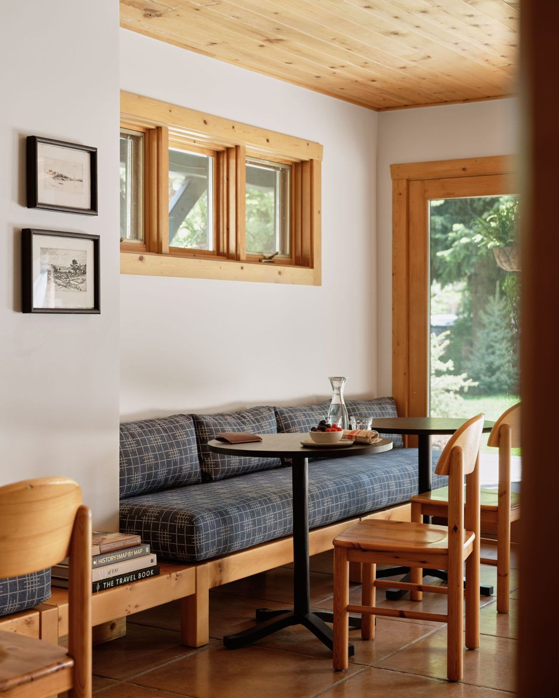
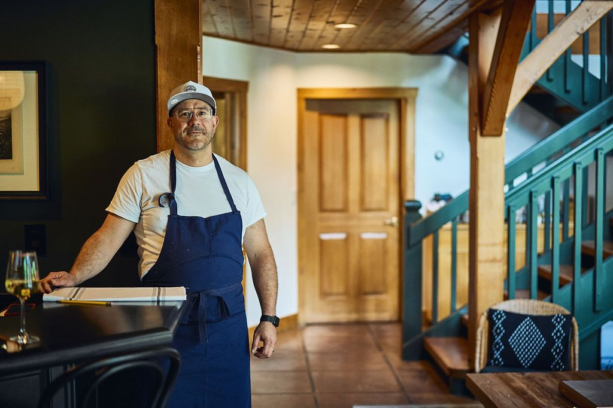
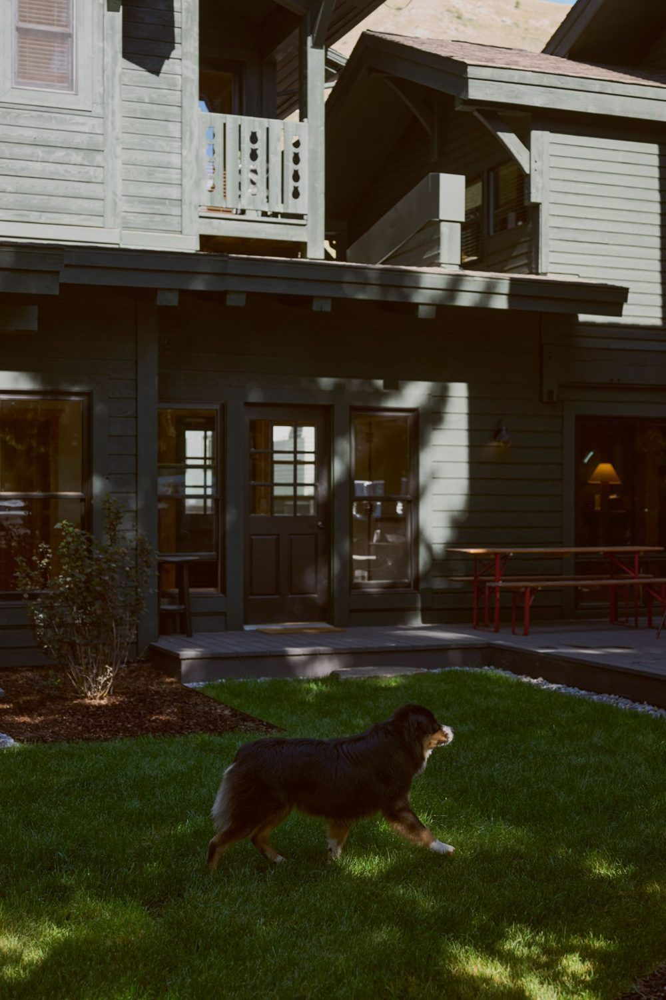
In the morning, two spruce trees shade the lawn out front. They’re about 65 years old, and their kind has grown on this valley floor far longer than there has been a town here. Blue spruce grows wild across the floor of Jackson Hole, especially along the Snake River.
We were asked to cut them down during the renovation. We kept them, the same way the Johnstones did in 2001, when the town’s rules called for a parking lot where the trees stood and they applied for a variance instead.
Spruce grows slowly, reaching full size in about 150 years and living for centuries. In the backcountry, it gives deer, elk, moose, and bear a place for shelter. It does something similar here, in a smaller way. Community events gather beneath the trees. Guests read in their shade. Our team takes breaks there.
Keeping what stood here before us is one way we try to honor the valley’s lineage. These trees were here first.
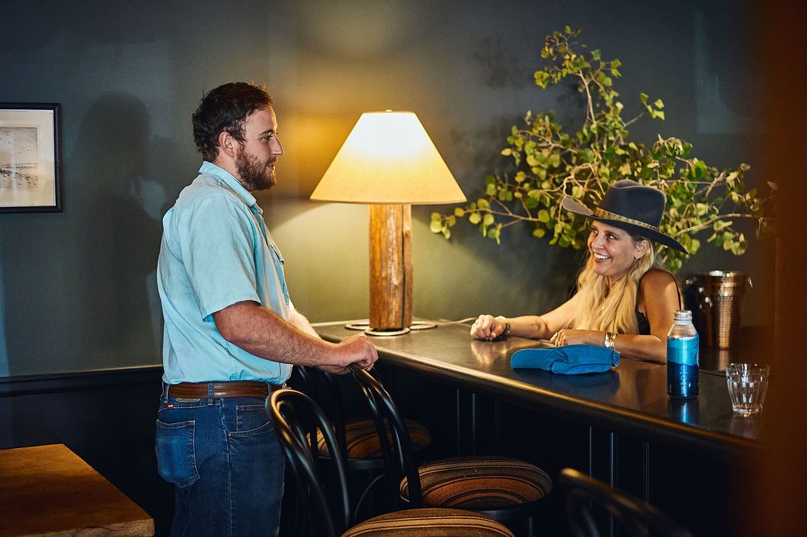
When Hans and Nancy Johnstone opened this house in 1994, they lived in the old log cabin at the back of the lot. Later they moved into room 122 and raised a baby there. For more than two decades, the people who ran Alpine House were also the people who woke up in it.
That’s still true. There is always a manager living here: someone who knows how the house sounds at 2 a.m., which pipes knock in January, and which guests want to be left alone.
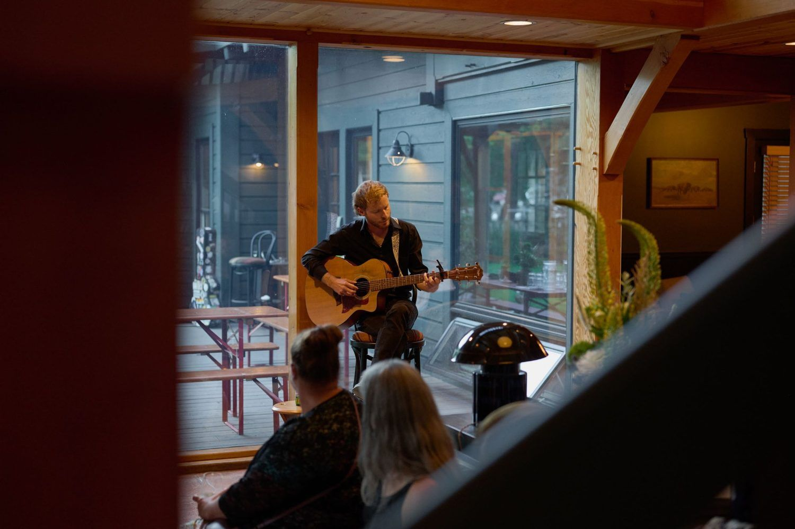
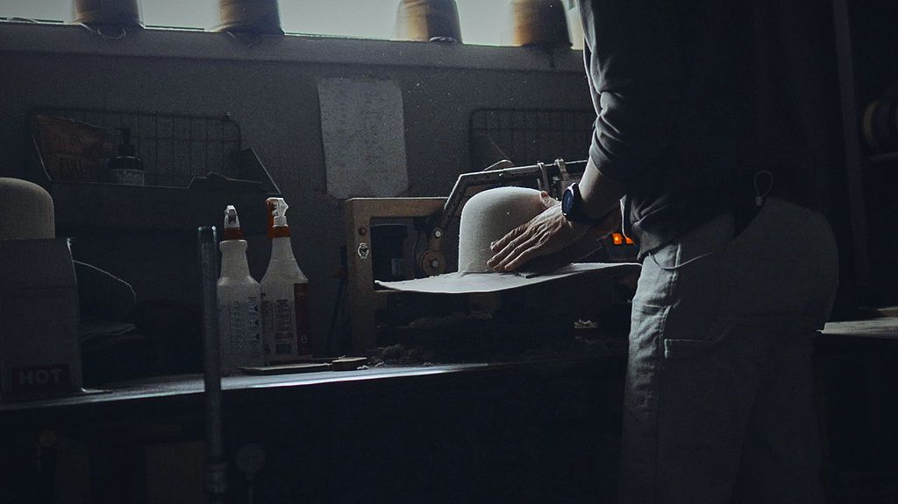
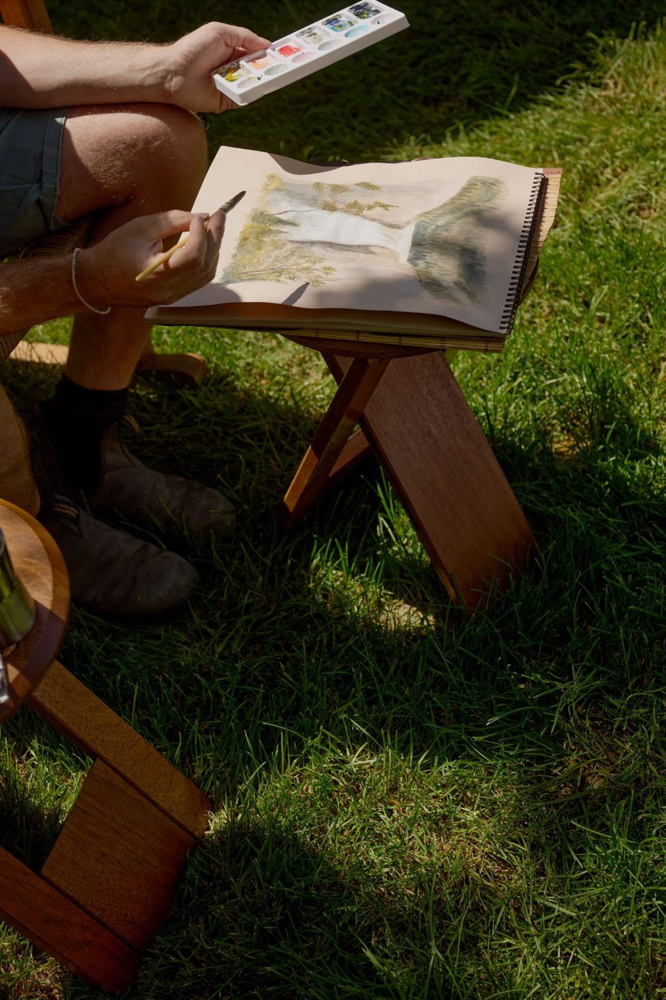
Part of the reason Yellowstone was protected as a national park is that two artists helped make it believable. When painter Thomas Moran and photographer William Henry Jackson came through with the 1871 Hayden Expedition, accounts of boiling mud and water shooting from the ground were dismissed back East as tall tales. Their pictures gave people something they could see. In 1872, Congress protected the place.
Art culture in this valley is older than ski culture. The first gallery in Jackson Hole was a canvas tent on the shore of Jenny Lake in the 1920s, with paintings hung from a clothesline. The painters who sold there had come from as far away as Denmark and as close as Idaho. They arrived, found their subject in the Tetons, and stayed as long as they could manage it, which usually meant other work too: building trails, guiding climbs up the Grand, whatever the season offered. By the late 1930s, one of them had a cabin below the Tetons with a giant PICTURES sign on top.
After the war, collectors and travelers found the Tetons too. Galleries opened on the Town Square, then art fairs, then a national museum. By the 1960s, art here was no longer something made at the edge of a ranching town. It had become one of its largest industries.
Jackson is now a major arts community. It is also an expensive place for artists to stay.
Which is why we keep a room for one. This valley was painted long before it was protected, and that work helped make the case for protection. We think that work is still worth housing.
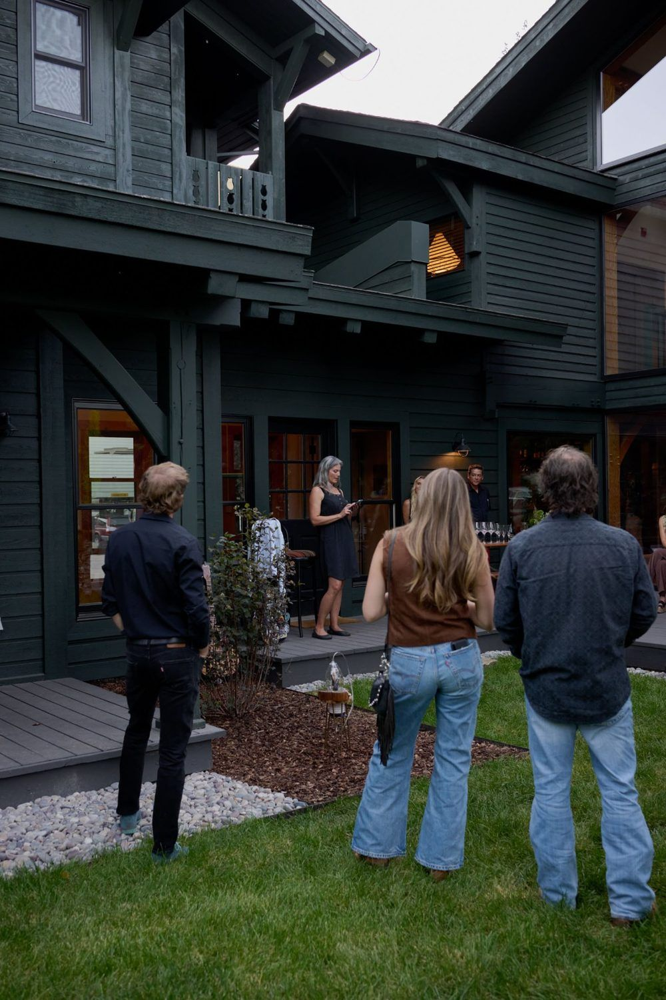
Next · 06What’s Next→In 2026, we took the time to renovate Alpine House without tearing down what was already here. In a town where older buildings are increasingly replaced rather than restored, we chose to keep the house, work with its existing structure, and build on what was already there.
We worked with an architect trained in historic preservation and completed a MindClick assessment of the health and environmental characteristics of the materials we used.
We created a permanent space for our Uncommon Artists.
And for the first time, we measured the property’s responsibility footprint with the Center for Responsible Hospitality.
Keeping an older building rather than replacing it was the right choice for us, but it means the house costs more to heat and run. That is something we need to keep working on.
Energy made up almost half of our carbon footprint in 2025, so we switched to renewable electricity. Renewable electricity made that energy cleaner but we still use more energy than similar hotels in Wyoming.
Not everyone on our team earns a Teton County living wage yet. Most do, but not everyone. We also focus on buying locally from Jackson, and we know we can keep more of our spending close to home.
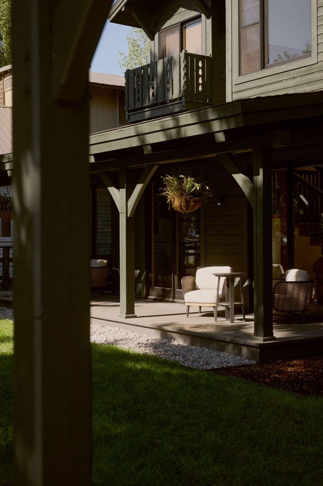
We will keep measuring our footprint so we can set targets, decide where to focus, and see whether the changes we make are actually working.
We’re working to increase team wages, expand local spending, and deepen partnerships with local businesses and makers.
Our community partnership spend is tied to our sister property, the Anvil. Like the Anvil, we are looking to commit 3% of our profits.
We are the first property to conduct both a renovation assessment based on reusable materials and an operational assessment with MindClick and CRH.
We will publish our results each year, including where we can do better.
We will join the Anvil in pursuing BEST certification with Jackson’s local business coalition.
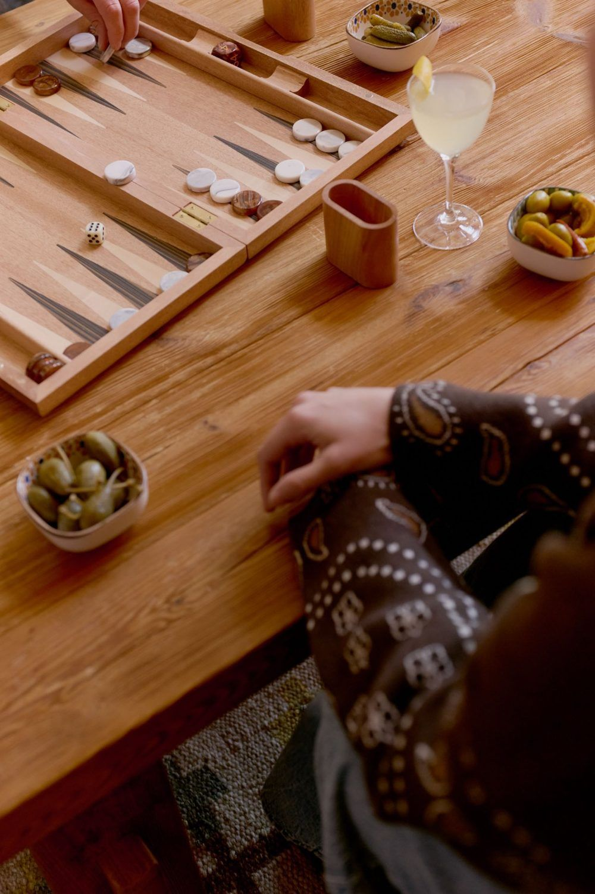
Next · 07What You Can Do→A few ways to be a better guest, here and anywhere.
The living room. The lawn. The bar in the evening. The best part of a stay is rarely in the room, and it’s hard to know a place if you only know your own four walls.
Not just for directions. They live here, and they’ll tell you what a visitor can’t see: what’s changed, what’s worth protecting, where they go on their day off.
Hans Kleiber, whose etchings hang in our bar and library, was discovered by a guest at a guest ranch who looked closely and did something about it. If a piece of work stops you, here, at a market, in a gallery, ask about it. And if you can, buy it. In a town this expensive, that helps artists stay.
Go to a reading, an opening, a talk at the historical society, a performance. Scenery tells you what a place looks like. Culture tells you what it thinks.
And learn a few of the older names. The Shoshone called the Tetons Teewinot, meaning many pinnacles. People have come to this valley for eleven thousand years.
The Jackson Hole News&Guide and KHOL 89.1 will tell you more about what this town values, and argues about, than any guidebook.
Most people come here for the mountain or for Yellowstone, and most do the same handful of things. Ask someone who lives here what they do on a Saturday. Then go and do it.
The town is walkable. The pathways run out to the elk refuge and beyond. The START bus goes to the mountain. You see more at the speed of a bicycle, and it’s one less car on streets the people who live here already find full.
Rent gear from a local outfitter or buy it secondhand from one of Jackson’s consignment shops. Borrow a book from our library or the Teton County library down the road. If something breaks, get it fixed here.
This valley has no landfill of its own. Anything you throw away makes a 198-mile round trip to be buried somewhere else.
We’ve published what we measure and where we fall short. Ask about it while you’re here, and read next year’s numbers.
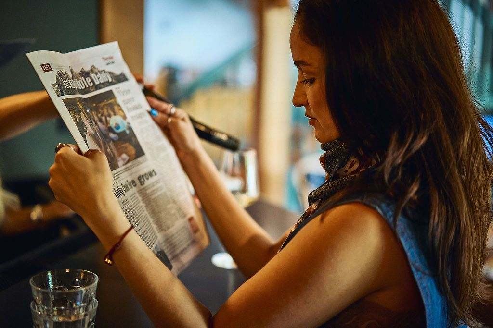
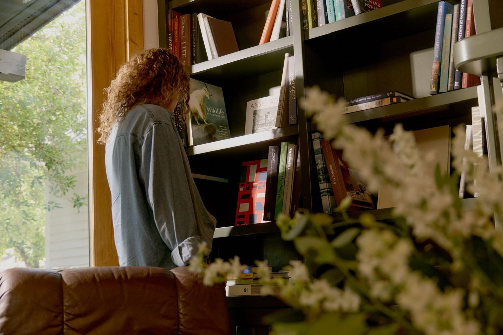
Next · 08The Fine Print→This report was produced by the Center for Responsible Hospitality in collaboration with Honest Operations and MindClick.
Our operating figures (energy, water, waste, carbon, and our people and community data) were calculated by CRH and Honest Operations and verified against utility bills, invoices, and other primary records. Unless noted, they reflect the 2025 calendar year, and benchmarks are the most recent available.
The impact of our 2026 renovation was measured separately by MindClick, using its Product Intelligence™ data, manufacturer information and modeled scenarios, and is not included in our annual operating footprint.
The total greenhouse-gas emissions from running the hotel for one night in one room, compared against similar hotels. It adds up the electricity we use and the natural gas we burn on site, plus the emissions from our suppliers, our team’s commute, our waste, water, and business travel.
Staff housed in accommodation the hotel provides at a subsidized rate.
The electricity used to run one room for one night, compared against similar hotels.
A hotel run by an independent operator rather than a large brand or third-party management company applying standardized, chain-wide requirements. Alpine House is managed by Arbus Hospitality, an independent operator of a small collection of hotels that shares our commitment to place, community, and responsible operations.
Ownership held by private individuals rather than investment funds, REITs, or other large financial institutions. Our investors are friends and family, most of whom live in or spend significant time in Jackson.
Local organizations we support in multiple ways: monetary donations, complimentary hotel rooms, staff volunteering, and space in our hotel for their work and events.
Our donations to community organizations as a share of the hotel’s profits.
The share of the electricity we purchase that comes from renewable sources.
The share of spending with our top ten suppliers that goes to businesses in Jackson and Wyoming.
The share of our team paid at least $26.61 an hour, the living wage for a single adult in Teton County. See the honest limits for how this was measured.
The share of our suppliers, by number, that are based in Jackson.
Staff who live in Jackson or within a 45-minute commute to the hotel.
The waste produced by one room for one night compared against national averages.
The water used in one room for one night, compared against similar hotels.
The share of department heads on our team who are women.
| Measure | Source | Year |
|---|---|---|
| Operational data | CRH / Honest Operations, from Alpine House invoices & primary records | 2024 |
| Energy, water & carbon benchmarks | Cornell Hotel Sustainability Benchmarking Index (CHSB), 2025 edition; Wyoming, non-resort / non-metro, median values | 2024 data |
| Waste benchmark | Cornell Hotel Sustainability Benchmarking Index (CHSB), 2025 edition; Upper upscale hotels | 2024 data |
| Local-workforce baseline (Jackson) | Teton Community Well-Being Dashboard | 2024 |
| Women in leadership benchmark | Zippia dataset, derived from BLS and US Census data | 2023 |
| Living Wage Benchmark | MIT Living Wage Calculator, Teton County, WY; single adult, no children ($26.61/hr) | 2026 |
| Hospitality living-wage benchmark | Dayforce Living Wage Index, with the Living Wage Institute, US workers in leisure & hospitality | 2024 |
Our carbon accounting follows the Hotel Carbon Measurement Initiative (HCMI), which conforms to the international standards for greenhouse-gas accounting: the GHG Protocol Corporate Standard and its Corporate Value Chain (Scope 3) Standard, and ISO 14064-1. Embodied carbon (our 2017 renovation) follows ISO 14067, the standard for product carbon footprints.
Scope 1 — direct, on-site emissions: natural gas and refrigerants. Alpine House burns natural gas on site, which makes up roughly 28% of our total footprint. We also account for refrigerant leakage from cooling and refrigeration equipment.
Scope 2 — purchased energy: emissions from the electricity we buy to run the building. The figures in this report cover 2025, before we switched to renewable electricity, so they reflect the standard power mix from our utility, Lower Valley Energy. In 2026 we enrolled in Lower Valley Energy’s Green Power program, which matches our electricity use with certified renewable power. That change will show up in next year’s report.
Scope 3 — indirect, off-site emissions: the goods and services we buy from suppliers including outsourced laundry, our team’s commute to work, business travel, water supply and wastewater treatment, and the hauling and disposal of our waste. For suppliers, the emissions were calculated for goods suppliers only, based on EPA USEEIO v1.2 (2019 data, 2021 USD), at 0.28–0.97 kg CO₂e/USD.
Jackson has no local landfill so our waste footprint reflects hauling and disposal, not just volume. We built the figure from monthly invoices (January–December 2025) and applied established factors:
| Factor | Value |
|---|---|
| Landfill methane | 0.52 MT CO₂e/ton (Teton County ISWR tip-fee data + EPA WARM v15, 2023) |
| Collection | 0.056 MT CO₂e/MT (EPA WARM v15, 2023) |
| Transport | 1.39 kg CO₂e/mile (198-mile round trip, Teton County → Idaho Falls) |
| Truck capacity | 21.96 tons per haul |
| Fill rate | 60%, held constant across years for comparability |
| Density | 138 lbs/yd³ (EPA Volume-to-Weight Conversion Factors, 2016) |
Fill-rate note: extra pickups peak in summer and fall near zero in winter, so real fill rates likely run above 60% in peak season and below it in winter. We use a flat 60% for consistency across years.
To understand the impact of our renovation, we worked with MindClick to measure the difference between a conventional “buy-new” approach and refurbishing and reusing. Using MindClick’s Product Intelligence™, we calculated the emissions savings achieved by buying vintage pieces from dealers and auction houses across the U.S. and shipping them to Jackson, compared with manufacturing equivalent new FF&E in Asia and shipping it to Jackson. We took the same approach to waste and cost, counting the weight of every piece we reused as kept out of landfill, and comparing what we paid for vintage with the estimated price of buying new.
All figures are estimates based on modeled scenarios, industry averages and manufacturer-provided information, not direct measurements. They reflect the project information available at the time of assessment; items without complete specifications are not included. Material percentages are measured by surface area. Packaging is excluded from emissions figures, so those estimates are conservative. Equivalencies use the U.S. EPA Greenhouse Gas Equivalencies Calculator.
Waste benchmarks for hotels are still scarce. We use the new waste benchmarks from the Cornell Hotel Sustainability Benchmarking Index, but few hotels report waste data, and the closest benchmark available is a U.S. average for upper-upscale hotels, not one for our region or size. That makes this a broad comparison. Even though our numbers come in below that benchmark, we still treat waste as a priority: Jackson has no landfill, and everything thrown away here is hauled out of the valley.
Since September 2026, we have bought 100% renewable electricity through Lower Valley Energy’s Green Power program. Every kilowatt-hour we use is matched by renewable energy certificates from wind at Idaho’s Horse Butte Wind Farm and small hydro in western Wyoming, tracked through the Western Renewable Energy Generation Information System. Our switch to renewable electricity came in 2026, while the figures in this report cover 2025. The reduction shown is a projection based on our 2025 use, calculated with market-based accounting, which counts the renewable power we buy. Our comparisons with similar hotels use location-based accounting, the same basis as the benchmark, so they don’t include the switch.
Our local workforce figure is defined as within a 45-minute commute of the hotel, which includes parts of Teton Valley, Idaho, and Star Valley, Wyoming. The Teton County benchmark counts only residents of the county, so it is shown for context rather than as a like-for-like comparison.
Our living-wage figure uses 2026 pay data rather than 2025, because our 2025 records were incomplete and the team changed with the renovation. We compare it against the MIT Living Wage Calculator, a national cost-of-living benchmark that sets Teton County’s 2026 living wage at $26.61 an hour for a single adult, rather than the $7.25 minimum wage that applies in Wyoming, which falls far short of what it costs to live here. The industry benchmark measures a family-supporting wage for full-time workers, while ours uses the single-adult rate, so that comparison is shown for context rather than as a like-for-like one.
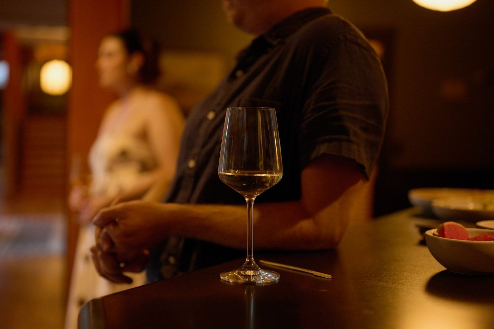
This house was built so strangers would end up in the same room. Thanks for being one of them.